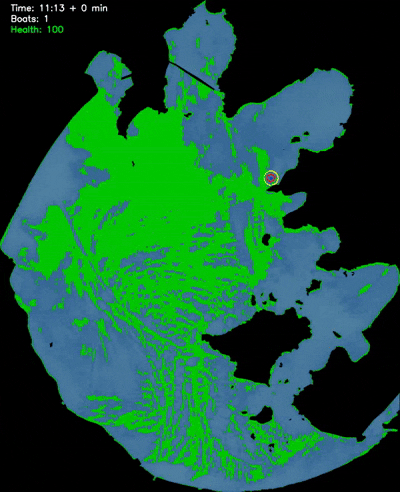
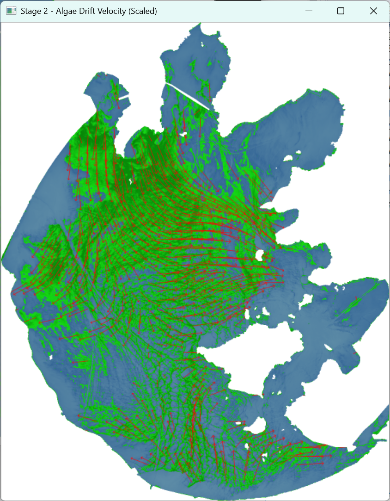

▶ 自动寻找最优打捞策略：太湖镇水源地保卫战动态模拟全过程
📖 项目概述
本项目是一个针对太湖水域开发的藻华监测与推演系统。不同于传统的数值模拟，本系统采用数据驱动的方式，直接利用高分卫星（GF1/GF4）的多光谱遥感数据作为输入。
系统通过计算 NDVI (归一化植被指数) 提取藻华时空分布，利用 Farneback 稠密光流算法 反演水体流场，并基于平流方程 (Advection Equation) 预测未来 8 小时的藻华扩散路径。此外，项目还包含一个“打捞船调度仿真模块”，用于评估在水源地受到威胁时的应急响应效率。
🧮 核心算法模型
1. 光谱特征提取
利用近红外(NIR)与红光(Red)波段计算植被指数，通过 Otsu 阈值分割提取藻类。
$$ NDVI = \frac{NIR - Red}{NIR + Red} $$
2. 流场反演 (Optical Flow)
基于亮度守恒假设，求解像素在 $t_0$ 到 $t_1$ 时刻的位移场 $\vec{V}$。
$$ I(x, y, t) = I(x+dx, y+dy, t+dt) $$
3. 动态推演 (Advection)
基于拉格朗日视角，计算藻类粒子在流场中的下一时刻位置。
$$ \vec{P}_{t+\Delta t} = \vec{P}_t + \vec{V}(\vec{P}_t) \cdot \Delta t $$
✨ 系统功能
多源遥感解析
集成 GDAL 库，支持 TIFF 格式的高光谱/多光谱卫星数据直接读取。自动解析地理坐标投影，实现像素坐标到地理空间的映射。
入侵预警机制
内置太湖流域关键坐标（如沙渚、太湖镇水源地）。当模拟推演发现藻华进入警戒半径（如 500m）时，自动触发红色警报。
打捞资源调度
独创的博弈模拟模块：模拟藻华扩散 vs 打捞船清理速度的动态平衡。通过贪心算法计算保卫水源地所需的最小船只数量。
🖼️ 模拟结果展示
图1：基于 GF1/GF4 卫星数据的藻华分布提取 (NDVI)

图2：利用 Farneback 算法反演的表面流速矢量场

图3：水源地保护与打捞船调度仿真静态画面